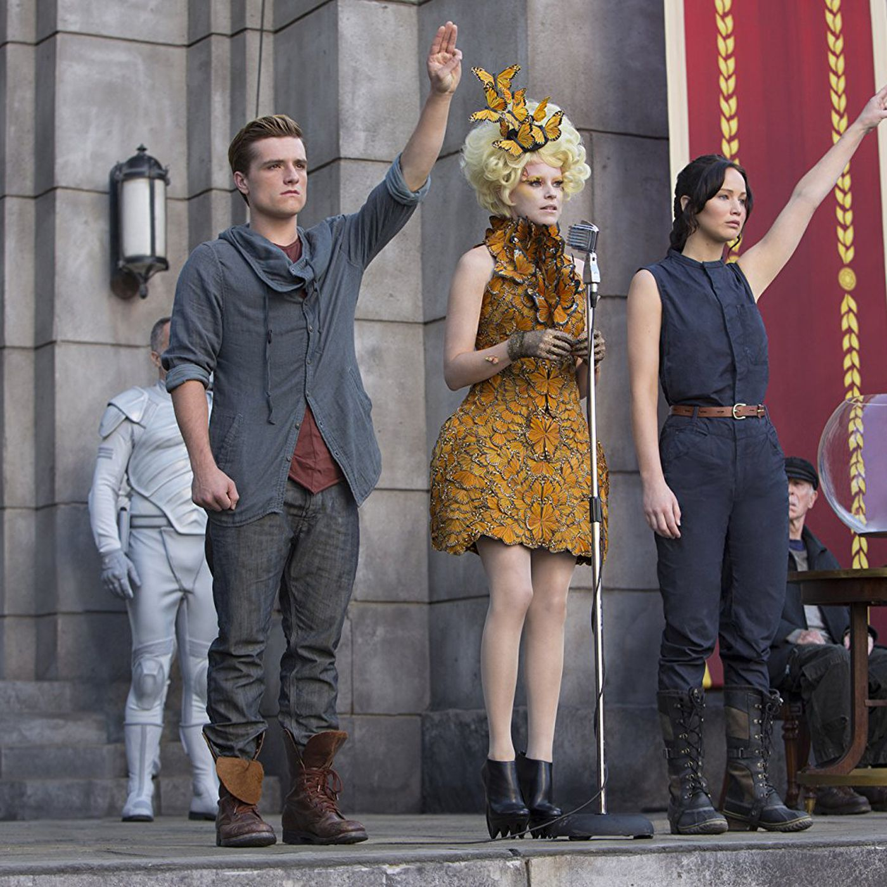

There is a country called Penem that, due to a rebellion, hosts The Hunger Games every year. This is where they choose two people from each of their 12 districts and place them in an arena. Whoever survives, wins the Hunger Games and recieves unmeasurable wealth and a new status for their victory. The book The Ballad of Songbirds and Snakes is the backstory of President Snow, who is one of the main villans of the story. It also introduces a new character, Lucy Gray, and overlapping details between Lucy Gray and Katniss Everdeen.
Suzanne Collins is the Author of all 4 books in The Hunger Games series. She was born in Conneticut, U.S. She recieved her education from Indiana University and NYU. She started writing for TV shows, and even was the main writter of Clifford's Puppy Days. While she was writing for shows, she was also working on books. She wrote several childrens books, along with more serious topic like war and genocide. She came across the idea for The Hunger Games by TV surfing and coming across the subject matter of Iraq and the brutal violence of the then current invasion.
| Click on the pictures to make them larger! | |||
|  | |||